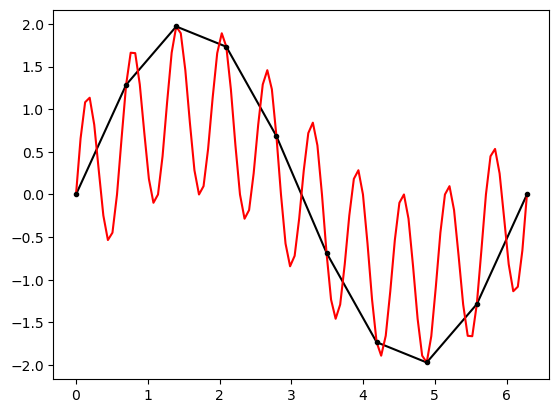

Los splines son otra herramienta para hacer interpolación de datos. La idea es que en lugar de usar polinomios de grado fijo, se usan polinomios de grado variable, que se van ajustando a los datos. En particular, los splines cúbicos son muy populares.
La idea es la siguiente: se tienen \(n\) puntos \((x_i, y_i)\), y se quiere encontrar una función \(S(x)\) lineal que pase por todos los puntos. Para ello, se divide el intervalo \([x_0, x_n]\) en \(n\) subintervalos \([x_i, x_{i+1}]\), y se define un polinomio \(S_i(x)\) en cada subintervalo, de tal manera que \(S(x)\) sea una función continua, y que \(S(x_i) = y_i\).
## Ejemplo de splines lineales y cuadráticosimport numpy as npimport matplotlib.pyplot as pltf =lambda x: np.sin(x) + np.sin(10*x)x = np.linspace(0, 2*np.pi, 10)x1 = np.linspace(0, 2*np.pi, 100)y = f(x)y1 = f(x1)plt.plot(x, y, 'k', label='splines')plt.plot(x1, y1, 'red', label='f(x)')plt.plot(x, y, 'k.')

Cuales son las propiedades de los splines lineales
Es una función continua
No es diferenciable
Es una función lineal a trozos
Relativamente fácil de calcular
Ejercicio
Encuentre un algoritmo para encontrar los coeficientes de los splines lineales, y prográmelo.
Ejercicio
De los datos del la gráfica anterior, encuentre el valor de \(y\) para \(x=1.5\) usando splines lineales.
def gauss_seidel(A, b, x0, tol=1e-6, max_iter=1000):""" Solves the linear system Ax = b using the Gauss-Seidel method. Returns the solution x and the number of iterations used. """ n =len(b) x = np.copy(x0)iter=0whileiter< max_iter:iter+=1for i inrange(n): suma =0for j inrange(n):if j != i: suma += A[i][j] * x[j] x[i] = (b[i] - suma) / A[i][i]if np.linalg.norm(x - x0) < tol:return x, iter x0 = np.copy(x)raiseValueError("Gauss-Seidel failed to converge after {} iterations".format(max_iter))
Splines cuadráticos
Si queremos que esta composición de funciones sea continua y diferenciable la debemos usar un polinomio de segundo orden para generar los splines. Vamos a ver un ejemplo
Sea los puntos
\(x_0\)
\(x_1\)
\(x_2\)
\(x_3\)
\(y_0\)
\(y_1\)
\(y_2\)
\(y_3\)
necesitamos encontrar polinomios de segundo grado definidos de la siguiente forma
\[f(x)=\begin{cases}a_1x^2+b_1x+c_1 \text{ para }x\in[x_0,x_1],\\
a_2x^2+b_2x+c_2 \text{ para }x\in[x_1,x_2],\\
a_3x^2+b_3x+c_3 \text{ para }x\in[x_2,x_3]\end{cases}\]
Para encontrar estos coeficientes debemos plantear un sistema de ecuaciones consistente, para ello necesitaremos crear 9 ecuaciones. Para ello vamos a usar las hipótesis que la función debe ser continua y diferenciable en \([x_0,x_4]\), así el sistema que encontramos es de la siguiente forma
Note que para que este sistema sea consistente, necesitamos una ecuación más, esta ecuación puede ser obtenida de información previa del sistema o simplemente podríamos escoger que en un punto de los extremos la segunda derivada sea cero. Así,
\[2a_3=0\]
de esta forma completamos la consistencia del sistema.
Ejercicio
Escriba un sistema de ecuaciones adecuado para resolver el problema, cuando se construye el sistema se busca que la matriz tenga propiedades intrínsecas (si es posible) como que la matriz sea simétrica
Splines cúbicos
Los splines cúbicos se diferencia de los cuadrados en que ahora se usan polinomios de tercer orden para generar los splines y adicionalmente exigimos que la concavidad se conserve, para ello se espera que la segunda derivada en los puntos intermedios de cada polinomio sea igual. Ahora para que el sistema sea consistente se debe crear dos ecuaciones, para ello se puede usar el mismo criterio usado para los splines cuadráticos.
Note que con la librería, no solo obtenemos la función que interpola usando splines cúbicos sino también su derivadas . Ejemplo obtenido de la librería.